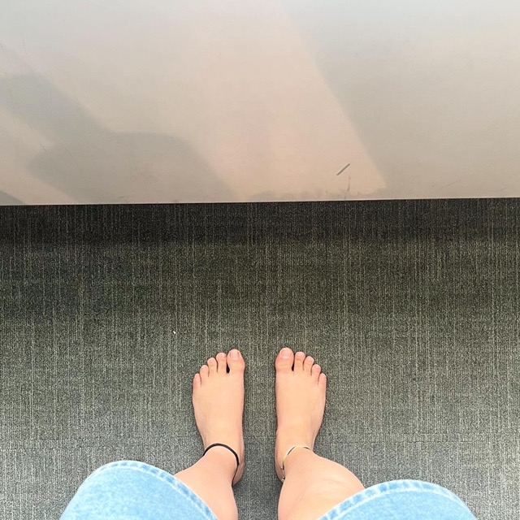

Barefoot at Warsaw Airport
Posted on
Writing this from the NS train in the Netherlands: My first barefoot flight has just been accomplished. And yesterday I achieved going to a stadium concert barefoot. It was Depeche Mode. Not my style, and a barefoot heavy metal concert is still yet to be achieved. But two achievements in two consecutive days are enough for a while I think. Now back to the routine…
